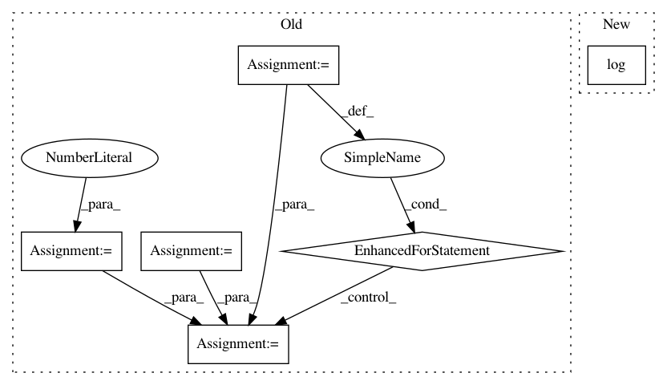

b0f34cdfd3ec8e41521cfd1b4a19c8dabb51fbbf,scipy/stats/_ksstats.py,,_kolmogn,#Any#Any#Any#,430
Before Change
if t <= 1.0: // Ruben-Gambino
if t <= 0.5:
return _select_and_pin_prob(0.0, 1.0, cdf=cdf)
prd = 1.0
mlt = 2 * t - 1
for m in range(1, n + 1):
prd = prd * m * mlt / n
return _select_and_pin_prob(prd, 1.0 - prd, cdf=cdf)
if t >= n - 1: // Ruben-Gambino
onemx = 1.0 - x
prob = 2 * onemx**n
After Change
if n <= 140:
prob = np.prod(np.arange(1, n+1) * (1.0/n) * (2*t - 1))
else:
prob = np.exp(_log_nfactorial_div_n_pow_n(n) + n * np.log(2*t-1))
return _select_and_clip_prob(prob, 1.0 - prob, cdf=cdf)
if t >= n - 1: // Ruben-Gambino
prob = 2 * (1.0 - x)**n
In pattern: SUPERPATTERN
Frequency: 3
Non-data size: 6
Instances
Project Name: scipy/scipy
Commit Name: b0f34cdfd3ec8e41521cfd1b4a19c8dabb51fbbf
Time: 2020-02-15
Author: pvanmulbregt@users.noreply.github.com
File Name: scipy/stats/_ksstats.py
Class Name:
Method Name: _kolmogn
Project Name: pgmpy/pgmpy
Commit Name: ca09dcecea454e6552a7f30e57aef1dc4f2f295e
Time: 2020-08-11
Author: tristandeleu@users.noreply.github.com
File Name: pgmpy/estimators/StructureScore.py
Class Name: BicScore
Method Name: local_score
Project Name: scipy/scipy
Commit Name: b0f34cdfd3ec8e41521cfd1b4a19c8dabb51fbbf
Time: 2020-02-15
Author: pvanmulbregt@users.noreply.github.com
File Name: scipy/stats/_ksstats.py
Class Name:
Method Name: _kolmogn_p